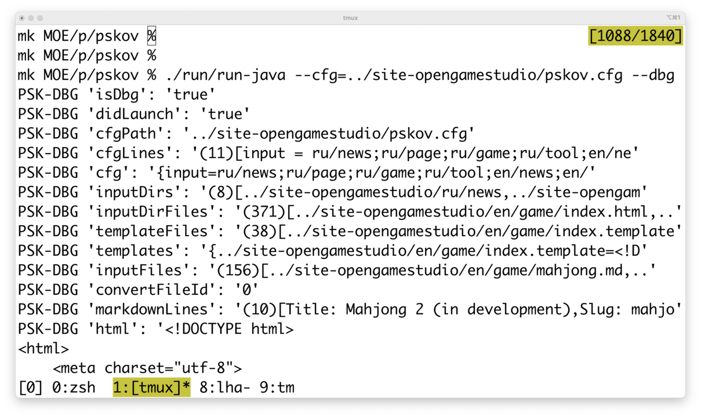

Новости
Заметки на Git в браузере
2025-05-10 00:00
Прошлое…???
В апреле я планировал…. и вот что вышло…
Май
В мае я планирую …. cors fix + what else? . . .
ПСКОВ 2 без LHA?
2025-04-10 00:00

Оценка осуществимости ПСКОВа 2 без Local Host Access
ПСКОВ 2 и первоначальный ПСКОВ зависят от запущенного на компьютере Local Host Access для доступа к его локальной файловой системе с целью чтения файлов Markdown и записи файлов HTML.
В марте я оценивал, может ли Isomorphic-Git читать и писать в хранилище Git прямо из веб-браузера. Результат положительный. На самом деле, это уже вторая оценка Isomorphic-Git. Первая произошла в 2021-м году, но закончилась неудачно, т.к. для работы Isomorphic-Git с, например, GitHub нужен. . .
CLD: Генерация контекста
2025-03-11 00:00

Генерация контекста
В феврале доработал транслятор Межъязыкового диалекта (Cross-language dialect) (CLD) до генерации Контекста на основе описания в YML. Сгенерированные Контексты уже использованы в следующих проектах:
- CLD (транслятор CLD генерирует свой собственный Контекст)
- LHA
- PSKOV
Доселе я никогда прежде не тратил время на объяснение сути Контекста, поэтому сейчас самое время для очень краткого описания: Контекст очень близок к понятию Store в Redux. К сожалению, на этом месте пояснение заканчиваю,. . .
ПСКОВ 2 на JVM
2025-02-11 00:00

Генерация отдельных страниц
В январе сделал половину функциональности оригинального ПСКОВа на Kotlin для JVM, а именно: генерацию отдельных страниц HTML из Markdown.
И ПСКОВ 1, и ПСКОВ 2 генерируют файлы HTML, которые отображаются идентично в веб-браузерах. Тем не менее, содержимое этих сгенерированных файлов отличается, т.к. ПСКОВ 1 использует Showdown для конвертации Markdown в HTML, а ПСКОВ 2 - intellij-markdown.
Взглянем на описываемую разницу. Допустим, у нас есть следующая страница Markdown:. . .
Итоги 2024-го года
2025-01-15 00:00
Итоги
Рассмотрим результаты года квартал за кварталом:
- Первый квартал (январь - март):
- (Swift) Реализована шина обмена данными для iOS с целью создания общего пространства для взаимодействия разрозненного кода
- Введено понятие «Модель ограниченного языка» (Limited language model) для описания правил портируемости кода
- Python выбран якорным языком программирования, из которого генерируются функциональные копии на других языках
- Второй квартал (апрель - июнь):. . .
Первая рабочая версия Local Host Access
2024-12-09 00:00

Local Host Access
Крошечный веб-сервер Local Host Access (LHA) готов заменить Local File System Access (LFSA) на JVM и macOS: я сгенерировал эту статью с помощью LHA на macOS. Таким образом, Kotlin оказался хорошим языком для кросс-платформенной разработки, правда, с небольшим ограничением.
Это небольшое ограничение состоит в том, что 99% разработки Kotlin приходится на JVM. Остальные 99% - на так называемый Kotlin Native для работы с iOS, Linux, macOS и Windows. Таким образом, если кому-либо понадобится что-либо. . .
Возвращение к разработке «ПСКОВа»
2024-11-14 00:00

«ПСКОВ» сегодня
Итак, у нас есть старая версия «ПСКОВа», а нам нужна новая с улучшенными характеристиками.
Первым делом стоит вспомнить, из чего состоит «ПСКОВ»:
- Непосредственно генератор в виде веб-страницы на HTML + JavaScript
- Вспомогательный скрипт Python для сохранения генерируемых файлов на диске
Вспомогательный скрипт нужен по одной причине: веб-страницам запрещено общаться с локальной файловой системой по соображениям безопасности.
Скрипт представляет из себя крошечный веб-сервер со следующими командами:. . .
Звук и поиск нового курса
2024-10-11 00:00
Звук
К середине сентября добавил поддержку звука, однако, на этом проект двумерной приключенческой игры «Хвост и тень» остановился, т.к. из проекта ушёл идейный вдохновитель Женя.
Поиск нового курса
В сентябре я заметил падение интереса к проекту и со стороны подписчиков. Объяснил я это себе тем, что результат функционально и графически не соответствует ожиданиям аудитории.
Поэтому решил проверить пару вариантов оживления проекта:. . .
Переключение сцен
2024-09-06 00:00
Август
В августе сделал переключение сцен, после чего стало возможно следующее:
- при нажатии в заставке кнопки «Начать игру» переходить к уровню с тремя этажами
- при выборе двери переходить на другой этаж
- при выборе телевизора переходить к переключению каналов
- при переключении каналов менять изображение в телевизоре
Таким образом, сцены хорошо решают вопросы как фокусирования на предметах,. . .
Страница 1 из 9